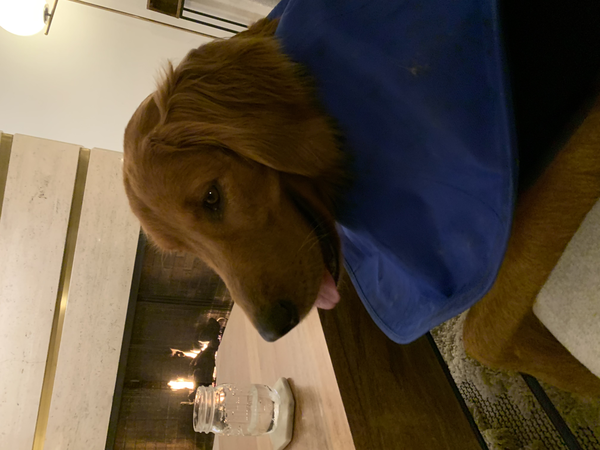

My awesome website
This is Christie’s awesome website

I can link to useful things like google and p8105
Specify the full web address (copy and paste from website)
I can make an extra page on my site and link to that. Here’s my about.
This is an about HTML file that’s in the same repo.
Here’s Murphy
JANE’s dog (that sometimes Robbie gets to play with) named Murphy. He’s a good friend. Here he is:
 Example two with scaling:
Example two with scaling:
Sometimes Murph-a-durph is in pain, because he’s had a procedure done:

Murph over time
Murph started off as a little guy

And then grew up and now looks like an old man with a backbrace:

BUT, He will be okay!

Created a new text file
_site.yml - describes overall attributes of your website that’s applied to every page of that site.
This is what puts in the navigation bar Have to re-knit all pages to get navigation bar on all pages
Font Awesome - this is where you can get icons for additional navigation bars.
Can also skip a lot of this with the website template
Now R knows we’re building a website
When we first opened things, R didn’t know we were making a website. Now, R sees that we’re doing that, so we quit and reopen R. Then look at Build tab - this picks up on the fact that we’re building a website, so we can build it without re-knitting everything because now R knows to apply to all the individual pages.
Making sure other people can access your website
Go to cmzettler.github.io and this will be public
Github tries to understand it’s very best what you’re doing
Can change themes with bootstrap
If you like something about a a website that looks like it’s an R/ github website, go play around on github until you find the pieces that you’re interested in and you can get it.